Can I use the art commercially?
Commercial use needs a separate quote so usage, scope, and licensing are clear.

about the artist
Hellooo!! I'm a 20 year old artist who has been drawing ever since I was tiny and honestly I don't think I ever stopped since 💥
I absolutely LOVE pretty colors, fluffy characters, silly expressions, dramatic little creatures, and art that feels soft, emotional, cozy, chaotic, or all of the above at the same time. Outside of drawing I also love baking, sewing, cooking, painting, and hoarding random creative hobbies like a dragon guarding treasure.
I especially love drawing anthropomorphic characters and that's pretty much how I fell headfirst into furry art. Cute doggos, cats, bunnies, wolves, weird little creatures, big ears, fluffy tails, soft ships, awkward romance, all of that stuff genuinely makes me so happy to draw.
I'm also an insane bunny x wolf dynamic enjoyer so if you see that energy in my art... no you didn't 🐇🐺
Commercial use needs a separate quote so usage, scope, and licensing are clear.
References, pose ideas, personality notes, deadline, and preferred package.